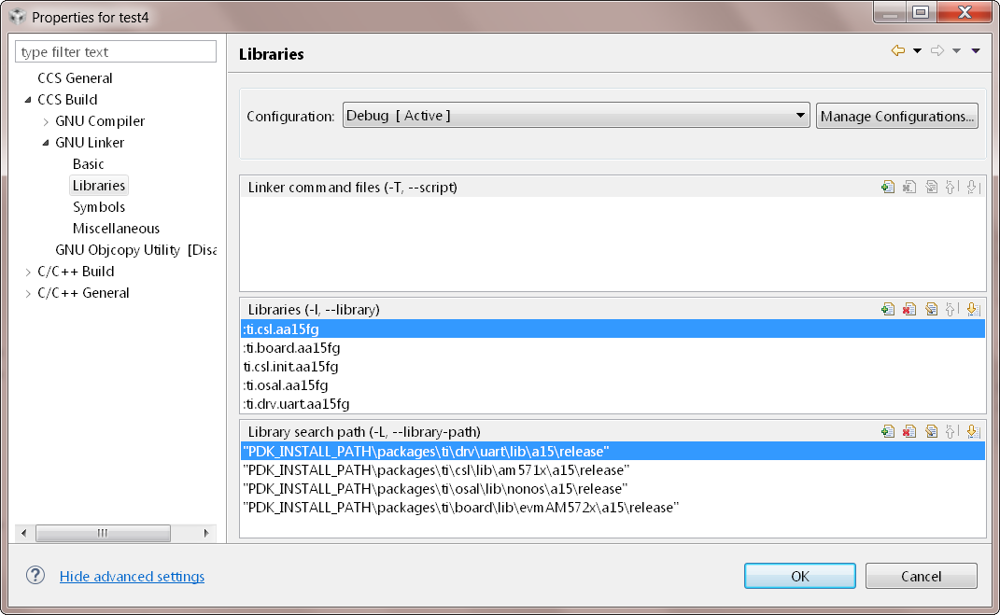

11.1. General Support¶
What are the main advantages of using the Processor SDK RTOS software?
Here are some key features of the Processor SDK RTOS that maximize software reuse for application developers:
Common API Interface: Processor SDK RTOS software is designed to maximize application software reuse and reduce the time to market for end application developers. It provides a unified approach to software by maintaining a common API interface in low-level drivers, inter-processor communication (IPC) drivers, and optimized libraries across all supported platforms. The API interface also enables ease of migration for TI MCU customers moving to TI ARM or DSP platforms by maintaining the same API interface for common IPs like SPI, I2C, UART,etc.
Ease of Migration to Custom Platform: Processor SDK RTOS consolidates all board-specific software into a single software component referred to as the “board library”. All of the other components rely on this board library to configure the underlying hardware. Migration to a custom platform requires only modification of the board library.
Integrated Board Diagnostic Software: The board diagnostic software included in the SDK allows for quick validation of the board functionality using bare-metal (no-OS) unit tests.
Reduces Need to Relearn TI Software: All future software releases for TI SoC platforms will use this software methodology and will maintain the common API interface for a given peripheral. Application developers who have already developed their software on one of TI`s Processors using Processor SDK will not need to re-learn working with the TI software.
Feature Addition and Reduced Software Costs: Due to the ease of migration of baseline software across platforms, developers can spend more time customizing their application and add more features to enhance it. This also helps to reduce the duration of the application development cycle and helps reduce software development costs.
Quarterly Software Updates: Processor SDK RTOS is updated every three months with bug fixes, new features, and new platform support. Users can subscribe to updates by using the “Alert Me” button for the package from the software download page on ti.com.
Note
If you are unable to locate the “Alert Me” option, please check the screenshot here:
How do I make a feature request or file bugs for Processor SDK RTOS?
TI E2E device-specific forums can be used to report a bug or a feature addition request:
How do I know the list of known issues and bugs resolved in Processor SDK RTOS release?
The information on known issues and bug fixes in Processor SDK RTOS can be found in the Release Notes for the version of the SDK you wish to use.
I am a current Sitara Starterware user. Should I migrate to Processor SDK RTOS?
Starterware software is no longer active and will not have any further releases. Existing starterware users should refer the following article to determine the migration path: Processor SDK RTOS Migration Guide Wiki. For all new development, we recommend that users start with the Processor SDK RTOS, which is currently under active development and provides periodic updates and bug fixes.
Is Processor SDK RTOS replacing MCSDK? How do I migrate from MCSDK to Processor SDK RTOS for KeyStone devices?
Yes. We recommend that for all new development, users should use Processor SDK RTOS for application development. For existing users, the Processor SDK RTOS provides an easy migration path for existing MCSDK 3.x (K2X) and MCSDK 2.x (C66xx) developers to move their application to the new software package. For complete details please refer to the wiki MCSDK to Processor SDK RTOS Migration.
How do I download earlier version of Processor SDK RTOS?
The download page for every Processor SDK RTOS release contains links to the previous release. Users can revert back to earlier releases using this link provided under the section “Previous Release.”
Does processor SDK RTOS release support all device part numbers in supported device family?
Processor SDK RTOS software is tested and validated on TI evaluation platforms that generally includes the superset part in the device family however, the software components like CSL, LLD drivers and RTOS are applicable on reduced feature set variant of the devices. Most of the code in the Processor SDK RTOS for multi-core devices is independent of how many cores exists on the device as they provide baseline platform software that can be run from any core.
It is the users responsibility to modify components that deploy tasks/software on slave cores like OpenMP, OpenCL, IPC and MultiProc Manager so that they use the feature set that is available on their device. In most cases software documentation will provide guidance on updating the software package however this should not be considered a comprehensive list of software components to be updated to run the software on a reduced feature set device variant.
Example: Processor SDK RTOS porting guide for AM571x/AM570x Speed Grades
Features noted as “not supported,” in device datasheet must not be used. Their functionality is not supported by TI for this family of devices. These features are subject to removal without notice on future device revisions. Any information regarding the unsupported features has been retained in the documentation solely for the purpose of clarifying signal names or for consistency with previous feature descriptions.
11.2. Training and Documentation¶
Is there any training content available for Processor SDK RTOS?
There are multiple Processor SDK RTOS training modules available online as part of the Processor SDK Training Series. Link to the complete series or refer to the direct links below:
Training URLs:
What documentation exists for Processor SDK RTOS?
There are three main documents for Processor SDK RTOS:
Getting Started Guide Provides information on setting up software and running basic examples/demonstrations bundled within the Processor SDK.
Software Developer Guide: Provides information on features, functions, delivery package, and compile tools for the Processor SDK RTOS release. This guide also provides detailed information regarding software elements and software infrastructure to allow developers to start creating applications.
Migration Guide: Provides migration information for applications built on top of the Processor SDK for RTOS.
11.3. Host and Target Setup¶
How do I setup the build environment with custom Processor SDK RTOS and CCS Installation paths on the host machine?
The steps to set up CCS and Processor SDK RTOS when the SDK or the IDE is installed in a location other than the default location are described below: Processor SDK RTOS Setup with CCS
A common gotcha while setting up the build environment is compatibility with CCS version. Please refer to `Release Notes <Release_Specific.html#release-notes>`__ for the recommended version of CCS
Can I install multiple versions of the Processor SDK RTOS in the same folder?
Typically, the version numbers of most components (PDK, Processor SDK, BIOS, XDC, etc.) will be updated in the newer release. However there are components like DSPLIB, IMGLIB, etc. and EDMA drivers that may remain the same. The safe option would be to install the most current Processor SDK in a custom location. You can have multiple versions of the SDK for different devices on your machine and install all of them in custom folders. For example, if you have a project with AM335x and AM437x that requires you to download the Processor SDK RTOS for those device, we recommend that you install them under different directories say C:\ti\PRSDK_AM3x and C:\ti\PRSDK_AM4x
Note
When you install the SDK in a custom location, there are few additional steps to follow:
CCS auto-detects components only in C:\ti path. So you will need to add the custom path to discovery as described in Setup CCS.
Assuming CCS is installed in the default path, the process to set the custom SDK path while building the SDK is provided in Install in Custom Path <How_to_Guides.html#update-environment-when-installing-to-a-custom-path>
What are the typical flows for a new user to setup the Processor SDK RTOS development environment?
The typical Processor SDK RTOS setup steps have been described below:
Step 1: Basic Hardware, SDK, and IDE Setup
Setup the software and hardware as described in the Getting Started Guide At this stage, you should have the CCS IDE environment, the Processor SDK RTOS installed and be able to connect to your target using an emulator.
Note
If you have installed CCS and/or the Processor SDK RTOS in a custom location, you need to manually add the SDK install path to CCS as described here CCS_and_SDK_installed_in_different_directories
Step 2: Run the Out-of-Box Examples or Diagnostics
The SDK and CCS ships with some pre-built out-of-box demonstrations/examples that can be flashed on to the EVM, copied over to an SD card, or loaded over emulator so that you can bring up and test the EVM hardware. The steps to flash and run the out-of-box examples are described here:
Step 3: Build Environment Setup
Processor SDK RTOS provides a script to set up the Windows and Linux environment with the component and compiler PATHs. Running the script and rebuilding the Processor SDK from the root directory is described in the wiki article Setup build Environment <Overview.html#setup-environment>.
Note
The script assumes that CCS and Processor SDK RTOS are installed in the default location. If you have installed CCS and/or the Processor SDK RTOS in a custom location, then modify the setup file to the custom path. Please setup the environment using the steps described in the wiki article Processor SDK RTOS Install in Custom Path
After the script executes, it prints all the PATH macros set for the different variables. Be sure that the compiler and component paths have been setup correctly.
Step 4: Rebuilding the SDK
The critical device-specific components of the Processor SDK RTOS can be rebuilt from the top-level make file provided in the root directory processor_sdk_rtos_x_xx_xx_xx. Invoking the build and available options from top-level make files is described in the wiki article Rebuilding SDK Components.
Note
The SDK offers command line build for all the components. CCS projects are only supported for DSP libraries and PDK driver examples.
Step 5: Generate and Run Peripheral Driver Examples
The PDK component in Processor SDK RTOS provides drivers for different IPs on the SOC and provides unit tests and examples for the drivers to test them on a specific board/hardware. These examples do not ship with pre-generated CCS projects and require users to generate a project create script to generate the CCS project for the unit tests. The procedure to generate the CCS projects for a given SOC is described in this article PDK_Example_and_Test_Project_Creation.
Step 6: Exploring Other Components in the SDK
The SDK package includes several other components that allow application developers to develop software for multi-core devices. This includes an inter-processor communication component known as (IPC). For SOCs that contain an C66x DSP, the SDK provides several optimized DSP libraries (DSPLIB, MATHLIB and IMGLIB). These components also ship with pre-built examples that can be built using build steps described in their documentation that is linked at the top level Software Developer Guide.
How can I optimize the build time when rebuilding the Processor SDK RTOS ?
Processor SDK RTOS top level build will rebuild IPC, all components inside the PDK package for all supported cores and evaluation platforms. Building all components can cause long build times. If you wish to only rebuild a section of the package, the build times can be significantly optimized if you invoke make for specific components in the SDK instead of making all components. Also, for the PDK users can invoke the build using the following syntax
make LIMIT_BOARDS="<BOARD>" LIMIT_SOCS="<SOC>" LIMIT_CORES="<CORE>"
SOC can be am335x, am437x, am571x, am572x, k2g,k2h,k2e, etc.
CORE can be “a15_0”, “c66x”, or “ipu1_0”, for a15, c66, m4 respectively.
BOARD can be any evaluation hardware platform that your SOC supports.
For Example:
make LIMIT_BOARDS="evmK2G iceK2G" LIMIT_SOCS="k2g" LIMIT_CORES="a15_0"
Why am I not able to connect to the DSP core in CCS when Linux is booted on KeyStone II devices?
The U-boot code that is booted before booting Linux puts the DSP core in reset. In order to connect to the DSP, you need to run a GEL script in CCS as described in this article Taking_the_C66x_Out_Of_Reset_with_Linux_Running_on_the_ARM_A15.
How can I create a SD card for Processor SDK RTOS?
Many of the TI-supported EVMs ship with an SD card with Linux Booting as part of the EVM out-of-box experience. Users are required to create a separate SD card if they want to boot their EVM with Processor SDK RTOS out-of-box demonstrations or run board diagnostics. The procedure to create an SD differs depending on whether you are doing this on a Windows or Linux host machine, as described in the two articles shown here:
How can I restore the firmware on my EVM to factory settings?
Most of the Sitara EVMs ship with a bootable SD card that boots Linux. To restore the EVM to factory settings, simply reflash the SD card with the bootable image using the SD Card Creation Script provided in Processor SDK Linux.
For KeyStone Devices, the Processor SDK RTOS provides a Program EVM Script with default binaries that reflash images on EEPROM, SPI, and/or NAND (depending on the EVM platform used).
Can I run Processor SDK RTOS on BeagleBone?
Yes, Processor SDK RTOS software can be used to develop and run code on BeagleBone platform. In order to test Processor SDK RTOS software on BeagleBone, you will need to connect a JTAG to the BeagleBone. With the default configuration of the board, we have observed that connecting a JTAG causes a reset. Users need to follow the procedure provided here to prevent a reset from occurring.
11.4. Device Drivers¶
How do I find out if a driver is supported in the package for my device?
For all SoC and board-specific driver support, we recommend that you refer to the Release Notes corresponding to your release.
If you need further details for driver support on all cores on heterogeneous multi-core devices, please reach out to the engineering team using E2E forums.
Where can I find example projects for device drivers?
The PDK package in processor SDK RTOS does not contain pre-canned CCS projects for driver examples. But it does provide scripts to set up the development environment and create the example CCS projects based on that setup. This allows the SDK the flexibility to create CCS projects based on the user-specific host setup. In order to create the example projects, users can follow the sequence provided below:
Users are required to setup their development environment using Processor SDK RTOS Setup
Setup the PDK build environment PDK Setup.
Execute the PdkProjectCreate script in ${PDK_INSTALL_PATH}/packages as described on the PDK Example and Test Project Creation wiki
What is the difference between SOC-specific driver library and the SOC-independent (Generic core-specific) driver library?
Each low level driver (LLD) in the PDK package contains two versions of the driver library. The naming conventions are as follows:
Generic Core-specific Driver Library : ti.drv.<module>.<core_specific_extension>
Example: ti.drv.gpio.aa15fg (A15 core-specific GPIO driver library)
SOC-specific Driver Library: ti.pdk.<module>.<soc>.<core_specific_extension>
Example: ti.drv.gpio.am572x.aa15fg (A15 GPIO driver library for AM572x)
When using the core-specific driver library, users are required to provide SOC-specific driver initialization structures that provide information regarding the module instance used, interrupt numbers, configuration modes, etc.
The SOC-specific driver library contains a default configuration (provided in <module>_soc.c file) built into the library that gets used to initialize the driver on TI EVMs and to run sample applications provided in driver package. It may need to be modified to suit for a custom board and/or target application. The default configuration includes a specific peripheral instance, interrupt configuration, etc.
How to create ARM baremetal CCS project that link to PDK driver libraries using GNU Linker?
The static libraries in Platform development kit (PDK) drivers use the convention ti.drv.<module>.a<ARM extension>. For example, the UART driver library for A15 is named “ti.drv.uart.aa15fg”. This is different form the convention of naming the libraries with a suffix of “lib” and extension “.a” which is generally the case for ARM compiler libraries (e.g., librdimon.a, libgcc.a, libm.a). This is usually not an issue when building applications using GCC compiler and make/gmake as libraries can be linked using “-l” option. However, when building bare-metal (no-OS) ARM projects in CCS, the IDE expects the libraries to have the name with suffix “lib” and extension “.a”. If developers try to link libraries which does not follow this convention, they observe a linking error that mentions that the library doesn`t exist. There are a couple of work around options available to users when working with baremetal PDK driver libraries:
Option 1: Add a colon in front of the library name when adding the ARM driver library to “Build Settings”->”GNU Linker”->”Libraries” as shown below:
Option 2: Add driver libraries using linker command file using the INPUT syntax
INPUT(
"C:\ti\pdk_am335x_1_0_6\packages\ti\drv\gpio\lib\a8\release\ti.drv.gpio.profiling.aa8fg"
"C:\ti\pdk_am335x_1_0_6\packages\ti\utils\profiling\lib\a8\release\ti.utils.profiling.aa8fg"
"C:\ti\pdk_am335x_1_0_6\packages\ti\board\lib\icev2AM335x\a8\release\ti.board.aa8fg"
"C:\ti\pdk_am335x_1_0_6\packages\ti\drv\i2c\lib\a8\release\ti.drv.i2c.aa8fg"
"C:\ti\pdk_am335x_1_0_6\packages\ti\drv\uart\lib\a8\release\ti.drv.uart.aa8fg"
"C:\ti\pdk_am335x_1_0_6\packages\ti\csl\lib\am335x\a8\release\ti.csl.aa8fg"
"C:\ti\pdk_am335x_1_0_6\packages\ti\osal\lib\tirtos\a8\release\ti.osal.aa8fg"
)
11.5. Chip Support Library (CSL)¶
Are there any bare-metal examples in the PDK package?
Customers who are wanting to start bare-metal code development can refer to the diagnostics package which uses the PDK drivers and does not rely on the TI RTOS. There are also CSL examples included in the package under the path ${PDK_INSTALL_PATH}\packages\ti\csl\test.
In addition to CSL example, the PDK contains bare-metal diagnostic test cases that help in testing EVM functionality. These can be located under pdk_am57xx_x_x_x\packages\ti\board\diag
Some of the driver examples contain a flag for BARE METAL usage of the driver. Example: GPIO/SPI already have these flags implemented.
Can I read core-specific registers on multi-core devices supported in Processor SDK RTOS using CSL code?
Yes, SDK provides CSL code to read core status and system configurations using the CSL provided for specific core. For CSL code specific to cores and peripherals present on your device, please refer to the header files provided under ${PDK_INSTALL_PATH}\packages\ti\csl\src\ip.
A good example of where you may need to access CSL code to read core-specific information is on a multi-core device. You can have code shared between multiple cores and would like to use a different code path or internal buffer based on core ID. The CSL code helps you implement this as follows:
For example, if you need to read the core ID on a multi-core DSP device:
uint32_t coreNum;
/* Get the core number. */
coreNum = CSL_chipReadReg(CSL_CHIP_DNUM);
To do the same on the multi-core A15 device, you can use the following code in the A15 CSL:
unsigned int armNum;
armNum = CSL_a15ReadCoreId(); //This gets the core ID using the MPIDR in the A15
How do I find out which CSL header and source files apply to my device?
The CSL package that is part of the SDK is a unified CSL that covers all devices supported by the Processor SDK RTOS. When you link to the CSL library or include the header files for a specific IP, the CSL library requires users to add a MACRO definition (-D SOC_XX####) to your build to indicate which SOC you are using. In order to locate the IP files for your device, always look at the header file at the top of the CSL directory pdk_<device>_xx_xx_xx\packages\ti\csl and the files that are found under the SOC_XX#### corresponds to the SOC that you are using.
SOC-specific files can also be found under the pdk_<device>_xx_xx_xx\packages\ti\csl\soc\<device_name>
What is the system memory map used by the SDK examples?
The TI RTOS-based examples included in the SDK rely on the platform definitions provided inside bios_6_xx_xx_xx\packages\ti\platforms for partitioning the SOC memory between all the available cores on the SoC. Please take a look at the snapshot below for AM572x:
/* Memory Map for ti.platforms.evmAM572X
*
* Virtual Physical Size Comment
* ------------------------------------------------------------------------
* 8000_0000 1000_0000 ( 256 MB) External Memory
*
* 0000_0000 0 8000_0000 100 ( 256 B) --------
* 8000_0100 FF00 ( ~64 KB) --------
* 0000_0000 8001_0000 100 ( 256 B) --------
* 8001_0100 FF00 ( ~64 KB) --------
* 0000_0000 8002_0000 100 ( 256 B) --------
* 8002_0100 FF00 ( ~64 KB) --------
* 0000_0000 8003_0000 100 ( 256 B) --------
* 8003_0100 FE_FF00 ( ~16 MB) --------
* 1 8100_0000 40_0000 ( 4 MB) --------
* 8140_0000 C0_0000 ( 12 MB) --------
* 2 8200_0000 40_0000 ( 4 MB) --------
* 8240_0000 C0_0000 ( 12 MB) --------
* 3 8300_0000 40_0000 ( 4 MB) --------
* 8340_0000 C0_0000 ( 12 MB) --------
* 4 8400_0000 40_0000 ( 4 MB) --------
* 8440_0000 C0_0000 ( 12 MB) --------
* 5 8500_0000 100_0000 ( 16 MB) --------
* 6 8600_0000 100_0000 ( 16 MB) --------
* 7 8700_0000 100_0000 ( 16 MB) --------
* 8 8800_0000 100_0000 ( 16 MB) --------
* 9 8900_0000 100_0000 ( 16 MB) --------
* A 8A00_0000 80_0000 ( 8 MB) IPU1 (code, data), benelli
* 8A80_0000 80_0000 ( 8 MB) IPU2 (code, data), benelli
* B 8B00_0000 100_0000 ( 16 MB) HOST (code, data)
* C 8C00_0000 100_0000 ( 16 MB) DSP1 (code, data)
* D 8D00_0000 100_0000 ( 16 MB) DSP2 (code, data)
* E 8E00_0000 100_0000 ( 16 MB) SR_0 (ipc)
* F 8F00_0000 100_0000 ( 16 MB) --------
*/
For bare-metal code, users are required to use a linker command file for each of the cores and partition the memory manually so that there is no memory overlap in the applications running on each of the cores. For bare-metal linker command files, you can refer to the CCS templates for Hello World or the linker command file used in the common folder of the the diagnostics package.
11.6. Board Support¶
What steps are involved when creating a new custom board library?
The board library consolidates all the board-specific information so that all the modifications made when moving to a new custom platform using the SOC can be made in the source of this library. The following steps are involved in creating custom board library:
Modify SOC Clock Settings The core clocks and module clocks used on the custom board library may vary based on the power requirements and external components used on the boards. TI provides Clock Tree Tools to simulate the device clocks. We recommend that you test the settings in CCS by creating a GEL file with the modified settings before modifying the source in the board library.
Modify SOC DDR: The board library has the correct DDR initialization sequence to initialize the DDR memory on your board. You may need to make changes to the AC timings, hardware leveling, and DDR PHY configuration, some or all of which may be different than the TI supported platforms. We recommend that you test the settings in CCS by creating a GEL file with the modified settings before modifying the source in the board library.
Useful DDR Configuration Resources
Sitara Resources: |
Keystone Resources: |
|---|---|
Modify SoC Pin Mux Settings. The Pin Mux configuration for a particular platform is obtained by creating a .pinmux project for the device using the TI Pin Mux Tools available on ti.com. The output of the tool can be plugged into the board library to modify the default configuration. The default baseline Pin Mux project (boardname.pinmux) is included in the board library for reference.
Modify IO Instance and Configuration to Match Use Case: If your custom board uses an IO instance different from the TI-supported board, the instance needs to be modified in the Pin Mux setup as well as in the board_cfg.h file in pdk_xx_Xx_xx_xx/packages/ti/board/src/<customBoardName>/
Modify Files Corresponding to External Board Components: The custom board may have external components (flash devices, Ethernet PHY, etc.) that are different from the components populated on the TI-supported EVM. These components and their support files need to be added to the pdk_xx_Xx_xx_xx/packages/ti/board/src/<customBoardName>/device path and linked as part of the board library build.
The above steps have been explained in detail in Section 9 of the `Application Development Using Processor SDK RTOS Training <http://training.ti.com/application-development-using-processor-sdk-rtos/index.html>`__. The slides talk about the different aspects of porting Processor SDK 3.0 to your custom platform, including incorporating custom Pin Mux, clocking, peripheral instance, etc.
Adding custom board to the PDK directory structure and build setup is described in the article Adding_Custom_Board_Library_Target_to_Processor_SDK_RTOS_makefiles
Note
TI evaluation platforms for Sitara Processors usually have board information stored in an EEPROM which checks for revision number and board name which is used to configure the board. When creating a custom platform if you don`t intend to use an EEPROM then we recommend removing code corresponding to Board_getIDInfo in your board library
Do I need to do any post processing on PDK files generated by Pin Mux Utility?
The Pin Mux utility is designed to automate the integration of a custom-designed SOC pin map into the board library software. For AM335x, AM437x, and K2G devices, the PDK files generated by the utility can be integrated into the board library without any manual edits to the files. For AM57x users, there are system design-level considerations that require the user to manually select IO delay modes for specific peripherals, which may require manual intervention before integrating with the board library.
An example for modifying the Pin Mux in the board library to modify the UART instance on AM335x is provided in the wiki article Processor SDK RTOS Customization.
For More Information: Refer to Application Development Using Processor SDK RTOS Training and Application Notes on AM57xx Pin Multiplexing Utilities.
How can I modify PLL settings in board libraries?
The SOC board library in the PDK configures the SOC PLL and module clock settings to the nominal settings required to be used with the TI evaluation platform. If you want to use different clock settings due to power consideration, or if you are using a variant of the device that needs to be clocked differently, you can enter the PLL and clock settings in the board library. All of the PLL and module clock settings are consolidated in the following files:
<Board>.c: Contains calls related to all board-level initialization. <Board> refers to the evaluation platform (For example, evmam335x)
<EVM>_pll.c: Defines the Board_PLLInit() function that configures the dividers and multipliers for the clock tree.
<EVM>_clock.c: Defines clock dividers, scalars, and multipliers for individual board modules initialized using the board library.
Can you provide an example of modifying a board library to use a different peripheral instance as compared to the EVM design?
A good example of the steps involved in modifying a peripheral instance is provided in the application note “Processor SDK RTOS Customization: Modifying UART Instance”
11.7. Secondary Bootloader¶
What board initialization is required in the application after booting using the Secondary Boot Loader (SBL)?
SBL calls the board library to set up the PLL clock, DDR, and Pin Mux, and to power on slave cores and the I/O peripheral from which it will boot the application. Excluding those just mentioned, any other configuration need to be done from the application code. As long as you have added all of the device initialization to the board library, you will not need to add any initialization code in the application.
Note
For AM57xx devices, the AVS and ABB settings required for all core rails is added to the SBL code, as this initialization is required only in a production environment.
Where do I locate flashing and boot utilities in the package?
The documentation for the booting and flashing of images to EVMs using Processor SDK RTOS is provided from the wiki article Processor SDK RTOS Boot Documentation
The Boot and Flashing Utilities for all devices is located in the PDK package under the path pdk_<device_name>_x_x_x\packages\ti\boot\sbl\tools.
The SDK provides secondary bootloader code for all devices, which is loaded by the ROM bootloader. The SBL is responsible for device initialization, waking up secondary cores, and deployment of the application code on different cores on multi-core devices. On single core devices, the SBL is used to manage the device initialization, as well as loading and running applications on the device.
Depending on the boot design you need to implement, the boot and flashing tools that are used for formatting and booting the SBL can also be leveraged to format and boot the application image directly. The flash-writing utilities for different EVMs can be located under the path pdk_<device_name>_x_x_x\packages\ti\boot\sbl\tools\flashWriter.
If the intent is to restore the KeyStone II EVM to factory settings, then the Program EVM Script enables users to program the flash on the EVM using the pre-built firmware images provided by TI/board manufacturer.
Why my SD card stopped booting with the latest Processor SDK bootloader ?
The FATFS library of processor SDK expects the SD card FAT partition entry should be in a specific format. The SD card may be having a different partition entry than the FATFS library that expects to process the media. The user has to reformat the SD card. The documentation for formatting the SD card through windows or linux is provided from the wiki article SDK Create SD Card Script for Windows and Linux.
11.8. Diagnostics¶
How to I test my EVM functionality? Can I use the same tests on my custom platform?
The Processor SDK RTOS provides unit tests to test interfaces on the EVM as part of diagnostics package that can be found in the package in the path pdk_<device_namme>_x_x_x\packages\ti\board\diag. It also provides a framework to run each of these tests through a command line serial interface. Users can either load the tests using an emulator or they can load them over an SD card to test the EVM functionality.
These tests, like all other examples in the SDK, rely on the board library to perform the SOC and board initialization. So if you have modified the board library to account for the components on your custom hardware, then you should be able to re-use the diagnostic tests while bringing up your custom hardware. Users will link to the new board library and rebuild the diagnostics package to leverage these examples on the custom hardware.
How to test Keystone II serdes interface?
For Keystone II Serdes, there is also a Serdes diagnostics package which can be found in the path pdk_k2hk/k2e_x_x_x\packages\ti\diag\serdes_diag. The tests run on C66x and cover BER, EYE and PRBS.
For common Keystone I/II Serdes debug, please refer to SERDES Link Commissioning on KeyStone I and II Devices”
11.9. Filesystem Support¶
What filesystem support if provided by Processor SDK RTOS ? Can I use UBIFS, RAMFS, or FATFS with TI RTOS when using external non-volatile memory devices?
Processor SDK RTOS only supports use of FATFS filesystem for some devices. For availability of support for your devices check the Release Notes There are numerous examples for using FATFS with USB driver and SD/MMC driver in the SDK that you can use for reference. The FATFS-specific documentation for Processor SDK RTOS is available in the FATFS wiki section of the Processor SDK RTOS.
11.10. TI RTOS¶
11.10.1. Useful Resources¶
How do I start writing my TI RTOS application code? Is there any documentation that describes the process?
The typical recommendation is to start a TI RTOS project using the predefined templates provided as part of CCS installation and then add custom configuration on top of it. CCS allows users to create a TI RTOS project with Minimum, Typical, and a set of generic examples, as you can see from wiki Processor SDK RTOS TI RTOS Getting Started Examples.
Other than that, there is an TI RTOS workshop that addresses different features and use cases of TI RTOS with CCS: Introduction to the TI-RTOS Kernel Workshop
The TI RTOS component also ships with user documentation that provides information on configuring TI RTOS through scripts APIs and also using the graphical XGCONF tool. Full online API and module documentation is available here: TI RTOS API Documentation
What interrupt latency, foot print, etc. can I expect while using TI RTOS?
Performance and size benchmarks are available for every released SYS/BIOS kernel in the TI RTOS package and are shipped as part of the standard product documentation. In addition to the benchmark numbers themselves, .pdf files provide a detailed description of how the benchmarks were implemented. For example, whether they were implemented in internal or external memory..
If you do not have access to a release, you can access the release notes (and thereby the benchmarks) online by clicking on the following link and going to the download link for the TI RTOS version that is part of the SDK.
This link enables you to access any TI RTOS products and their associated release notes. The release notes may be browsed directly. There is no need to download the whole product. You will need to have a my.ti login to access this site.
Within the SDK package, TI-RTOS Benchmark Documentation can be found under directory path bios_6_xx_xx_xx\packages\ti\sysbios\benchmarks\doc-files
How do I debug TI-RTOS and driver code?
In order to single step through code, the driver libraries and the TI RTOS libraries should be built with complete symbol definition.
For building a debug-able version of TI RTOS, please refer to the following article: Making_a_debug-able_Custom_SYSBIOS_Library
Processor SDK RTOS drivers are already built with full symbol definition. So you should be able to single step into the drivers in the CCS IDE environment. Note: You may need to add the source of the SYS/BIOS and the drivers in the source search path in CCS.
Advanced debug of TI RTOS applications using system analyzer and ROV object viewer is described in the TI RTOS SYSTEM Anlayzer wiki.
How can I run TI RTOS on secondary ARM cores on multi-core ARM devices
Processor SDK RTOS supports multiple device that have multi-core ARM like AM572x and Keystone2 devices. In order to run TI RTOS application on the secondary ARM core in non-SMP mode, application developers need to add correct coreID to the configuration to their BIOS configuration to allow the hardware interrupts to be routed to the secondary core.
For example on AM572x which has 2 A15 cores, to run the TI RTOS example on secondary ARM core, application users need to add :
var Core = xdc.useModule('ti.sysbios.family.arm.ducati.Core');
Core.id = 1;
Why do I get a “undefined reference to `ti_sysbios_rts_gnu_ReentSupport_checkIfCorrectLibrary’” error when compiling my application?
You may have encountered this error when building an application for ARM using makefile and not using CCS. You will need to link in the proper C runtime library from SYS/BIOS. Double check the makefile(s) and make sure that you are using libc, libgcc, libm, etc. from the SYS/BIOS package and not from your toolchain (GCC Linaro).
For additional information, refer to: What do I need to do to make the C runtime library re-entrant when building SYS/BIOS applications for Cortex-A GNU targets
Where do I post questions on generic TI RTOS?
We recommend that all TI RTOS users review the list of TI RTOS frequently asked questions on the TI RTOS FAQ page prior to posting the questions on the E2E forum. If the question is not specific to the Processor SDK RTOS drivers, but relates to configuration of a specific module inside TI RTOS, then please post the questions on the TI RTOS E2E Forum.
When load a RTOS example to DSP2, the code stuck at timer.c before go main(), but the same worked on DSP1?
By default, BIOS uses GPtimer5 to source the clock ticks in the BIOS clock module. The GEL is created with the assumption that the DSP1 developers will use GPtimer5 and DSP2 users will use GPtimer6 to source clock module. This means that DSP2 developers will need to add configuration script to change the clock source to GPtimer6. Try to add the following in your DSP2.cfg :
var Clock = xdc.useModule('ti.sysbios.knl.Clock');
Clock.timerId = 5; /* Change BIOS clock to GPTimer6 */
11.11. Networking Support¶
Can I use NDK software stack on all devices supported in Processor SDK RTOS?
The NDK software stack provided by TI typically requires a transport layer called Network Interface Management Unit (NIMU) layer to interface the underlying platform software elements and device drivers. Please check the Processor SDK RTOS Release Notes for support of the NIMU transport driver to determine if NDK software can be utilized on your device.
Where do I find the documentation for the NDK stack?
All the networking-related documentation for Processor SDK RTOS, along with the NDK software stack, is linked from the wiki NDK Documentation and References.
11.12. Inter-processor Communication (IPC)¶
How do I build and run IPC examples?
IPC and corresponding examples are designed to be built from the top level Processor SDK RTOS IPC Make Target. Please ensure the Processor SDK RTOS build environments have been set up before running the “make ipc_bios” or [make ipc_examples] option.
The documentation to run the IPC examples is provided as part of ReadMe.txt in the IPC examples or on a device-specific wiki article like How to Run AM57x IPC Examples.
Where can I locate IPC FAQ document?
For IPC-related questions, please refer to the IPC FAQ wiki article that consolidates the FAQ across all multi-core TI processors.
How can I run TI RTOS IPC examples on AM57xx devices?
The instructions to run the IPC examples on AM57xx are provided in the wiki article “Running IPC Examples on AM57xx/DRA7xx”
11.13. DSP-Optimized Libraries¶
Why did I encounter a build issue while rebuilding DSPLIB, IMGLIB, or MATHLIB with C6000 CGT 8.x?
This is a known issue. Please refer to the note provided on the Software Libraries wiki to fix the issue.
Why does the performance of the DSP Libraries not match with the performance in the documentation?
The performance documented in the optimized DSP libraries that are part of the Processor SDK RTOS has been obtained using a C66x simulator interface which only works with a flat memory model. In order to obtain performance similar to the documentation, the user is expected to perform the SOC-specific optimization. This includes placing the data buffers in internal DSP memory, using optimized compiler settings in the application code, enabling cache if buffers are in DDR memory, enabling EDMA for moving data from external memory to L2, etc.
The CSL libraries for the SOC and TI RTOS provide APIs for cache management of instruction memory as well as data memory. There are some useful documents that enable benchmarking on the DSP and ARM cores.
11.14. EDMA Library¶
How do I resolve EDMA instance usage conflict?
There are several RTOS driver example projects using EDMA (e.g., PCIE, SPI, UART, and MMCSD). These projects typically can run on A15, DSP, or M4 cores. As a driver example, these projects use the first EDMA instance (EDMA #0), assuming that no others are using it at the system level.
There may be an issue if the EDMA instance #0 is already being used in the system. For example, if the A15 core runs Linux and uses the EDMA #0 already, and a user wants to run a Processor SDK RTOS example on C66x with default EDMA #0. To resolve such an issue, please choose an unused instance. For example, EDMA #1 in the example.
CCS 7.1 platform can’t be verified warning
When I use CCS 7.1 for Processor SDK RTOS 4.0 projects, I saw a warning “Platform name ‘ti.platforms.xxxxxx’ could not be verified. Your project may not build as expected.”
The warning shows in Properties—->General of a CCS project in CCS 7.1. The warning is due to a change made in CCS 7.1, whereby the User Interface tries to verify the project’s target/platform name against a list of known names and if it cannot be verified then it shows the warning. The warning, in itself, does not necessarily mean that the target-name is incorrect. Especially in this case where we are looking at a known good project, it is likely showing up because the known target-names list it is checking against is incomplete. Hence you can treat the warning as harmless and ignore it. This causes some confusion we have decided to remove the warning in the next release of CCS.
Keystone I and II devices SGMII/MDIO/PHY
How to setup SGMII interface to a PHY or to another SGMII port without using a PHY?
There are 3 SGMII connectivity modes: • SGMII port with PHY attached and auto-negotiation enabled - for connecting to an external PHY • SGMII master to SGMII slave with auto-negotiation enabled - this is for connecting two SGMII devices, one has to be set as master and the other as slave • SGMII port to SGMII port with forced link configuration – generally this is used when one of the ports does not support auto-negotiation
When a device having an SGMII MAC port is connected to a PHY device, the SGMII MAC is the slave in this link and the PHY is the master. The link is established using auto-negotiation across the SGMII link that is initiated by the master with an expected response by the slave. If the auto-negotiation is not initiated by the link master (PHY), the link will remain down. In TI Keystone EVMs, the Processor with an SGMII MAC port is connected to a PHY, which provides a copper interface to a Gigabit RJ-45 connector. The Processor’s SGMII MAC port is configured as a slave with auto-negotiation enabled. This is done in the Init_SGMII().
When a SGMII MAC port is connected to another SGMII MAC port and auto-negotiation is enabled, one must be configured to emulate a master while the other is a slave. The master port uses the MR_ADV_ABILITY register to determine speed and duplex setting instead of the MR_LP_ADV_ABILITY register.
Alternately, when an SGMII MAC port is connected to another SGMII MAC port and auto-negotiation is not enabled, or not available, a “forced link” can be established. Again, the MR_ADV_ABILITY register determines the speed and duplex setting. Please refer to the TI KeyStone Architecture Gigabit Ethernet (GbE) Switch Subsystem User Guide, section 3.3, SGMII_CONTROL, MR_ADV_ABILITY and MR_LP_ADV_ABILITY registers for detail. The corresponding CSL code is implemented in packages\ti\csl\src\ip\sgmii\Vx\csl_cpsgmiiAux.h.
In a TI SGMII to FPGA (PHY port) connection, data corruption is observed on egress direction, what could be the cause?
First to check if the FPGA side is a PHY port or 1000BASE-X media port. There are many similarities but they are not identical. It is important to recognize that from an electrical point of view, the SGMII interface is very similar to the 1000BASE-X interface. Both use 8B/10B encoding, a serial interface and an embedded clock. Systems can operate with SGMII connected to a media port but they are not guaranteed to operate as they are not consistent with the Ethernet standard.
Also, check Rx equalization. Some FPGA may have different choices of robust mode (dynamic feedback equalization, aka DFE) or more basic mode (linear equalizer). The DFE allows better compensation of transmission channel losses by providing a closer adjustment of filter parameters than when using a linear equalizer. However, a DFE cannot remove the pre-cursor of a transmitted bit; it only compensates for the post cursors. Try to use basic mode to see if it helps.
How do I program the PHY through MDIO interface? I find that TI Init_MDIO() function is empty?
For some TI EVMs, Init_MDIO() is empty because that PHY is configured using pin strapping and no MDIO control is needed to enable it to operate through auto-negotiation in the optimum configuration. Sample CSL code to access PHY via MDIO can be found under packages\ti\csl\src\ip\mdio\Vx\csl_mdioAux.h. The MDIO user access register is used to communicate with the physical transceiver connected to the MDIO bus, not to a register of the Keystone SOC MDIO itself. The code must be customized for what you want to get or set within the PHY. To do this you must set the correct PHY address and then identify PHY register that you want to access. Those registers are defined in the PHY datasheet, not TI Keystone documents.
After PHY is programmed, the MDIO controller will continue polling the PHY periodically for status. The PHY Alive Status Register (ALIVE) and PHY Link Status Register (LINK) can be read to monitor this status of the PHY and link (please refer to the TI KeyStone Architecture Gigabit Ethernet (GbE) Switch Subsystem User Guide, section 3.4).
11.15. C++ Build Verification¶
How do I verify C++ build environment?
Cpptest application verifies C++ Build environment on the Processor SDK package. It is located under the path $(PDK_INSTALL_PATH)/ti/osal/test This is a simple application with a print message. The application includes top level header files of all components in the PDK package and is built in C++ build environment. The header files are included dynamically for AM57xx and K2G platforms and statically included for AM335x and AM437x platforms.
11.15.1. Platforms Supported¶
SOC |
BOARD NAMES |
CORE |
||||
|---|---|---|---|---|---|---|
a8host |
a9host |
a15_0 |
c66x |
ipu1_0 |
||
AM335x |
evmAM335x |
X |
||||
icev2AM335x |
X |
|||||
iceAMIC110 |
X |
|||||
skAM335x |
X |
|||||
bbbAM335x |
X |
|||||
AM437x |
evmAM437x |
X |
||||
idkAM437x |
X |
|||||
skAM437x |
X |
|||||
AM57xx |
idkAM571x |
X |
X |
X |
||
idkAM572x |
X |
X |
X |
|||
idkAM574x |
X |
X |
X |
|||
evmAM572x |
X |
X |
X |
|||
K2G |
evmK2G |
X |
X |
|||
iceK2G |
X |
X |
||||
where,
X - supported
11.15.2. Build Setup¶
For Windows : Download and install Strawberry Perl.
For Linux : Execute the command “sudo apt-get -y install perl” at the linux command prompt.
Note
This is an one-time installation and need not be repeated for every build.
11.15.3. Steps to Build¶
The following are the steps to build and test the Cpptest Application.
Build the PDK package
Note
Building PDK package completely is neccessary before invoking a build on Cpptest application.
For Windows:
cd $(PDK_INSTALL_PATH)
pdksetupenv.bat
gmake all
For Linux:
cd $(PDK_INSTALL_PATH)
source pdksetupenv.sh
make all
Invoke the Cpptest application build, using the following commands.
For Windows:
cd ti/osal/test/cpptest
gmake BOARD=<board_name> CORE=<core> CPLUSPLUS_BUILD=yes
Example:
gmake BOARD=idkAM572x CORE=a15_0 CPLUSPLUS_BUILD=yes
For Linux:
cd ti/osal/test/cpptest
make BOARD=<board_name> CORE=<core> CPLUSPLUS_BUILD=yes
Example:
make BOARD=idkAM572x CORE=a15_0 CPLUSPLUS_BUILD=yes
Refer section Platforms Supported for the BOARD and CORE names.
Upon successful build, the application binaries are created under $(PDK_INSTALL_PATH)/ti/binary/cpptest/bin/<board_name>
11.15.4. Running the Application¶
Launch CCS and and switch to the Debug Perspective.
Launch the Target configuration and connect to the target.
Load the binaries to the selected core using Run->Load->Load Program.If you need help in CCS setup, refer section Setup CCS explaining this further.
Launch the serial console utility with the following configurations:
Baud Rate: 115200
Data : 8 bits
Parity : None
Stop : 1 bit
Flow Control : None
Verified utilities are Teraterm (Windows) and Minicom (Linux).
Run the program in CCS and check for the below output on the serial console:
C++ Build Successful!